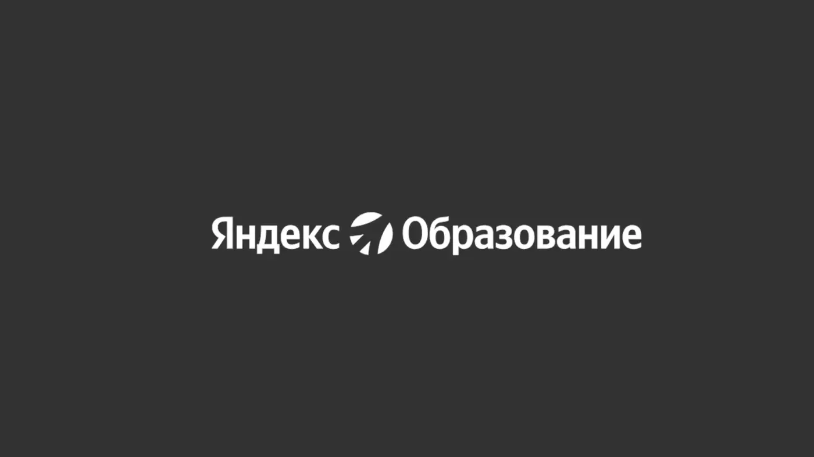
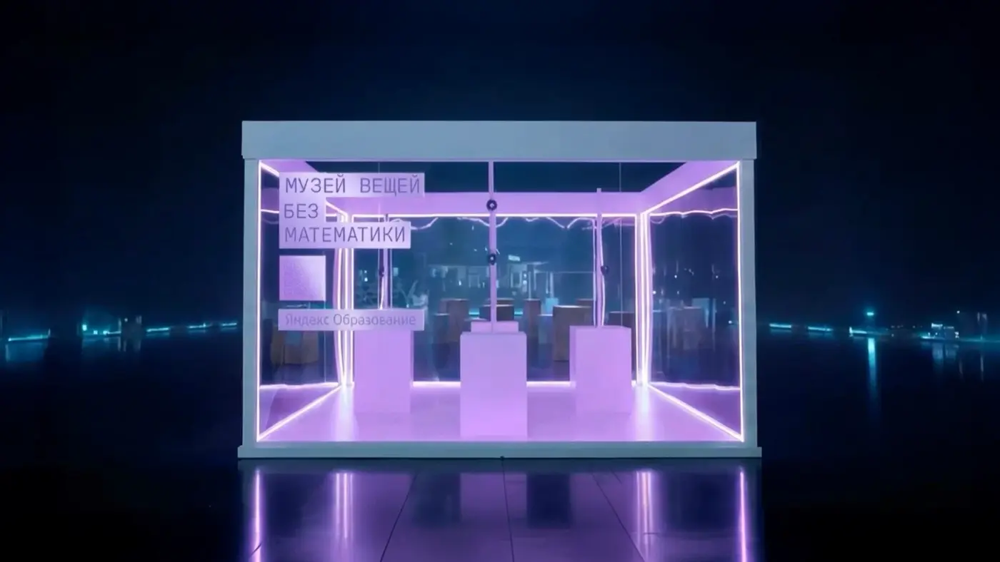
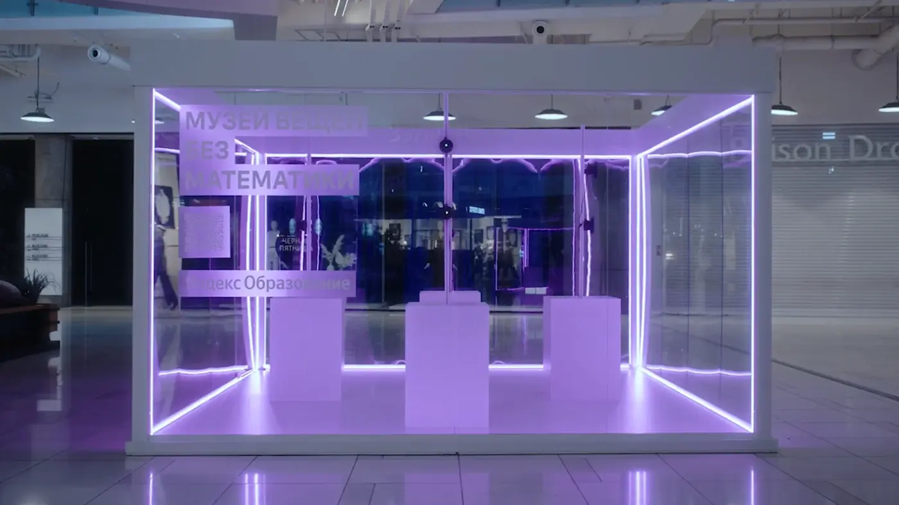
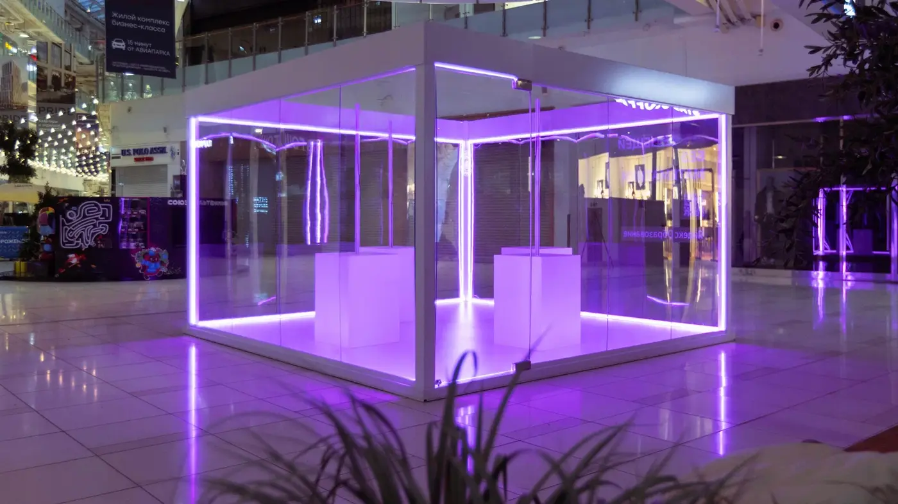
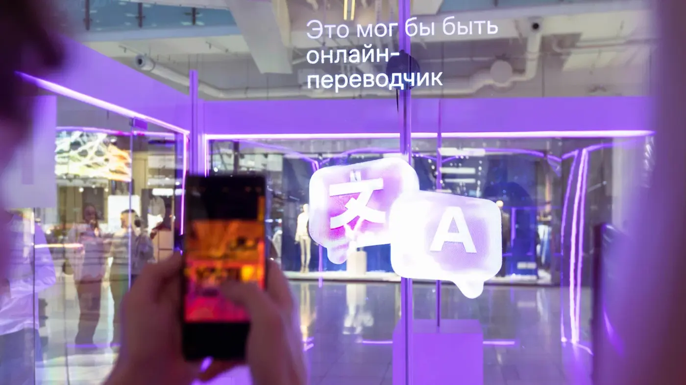
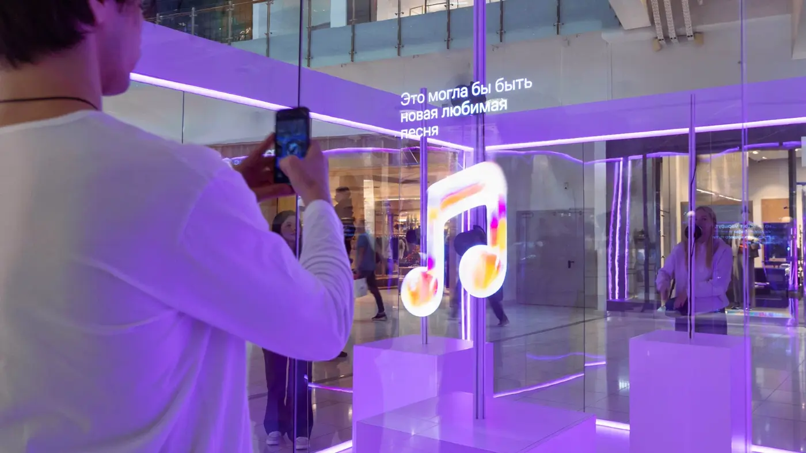
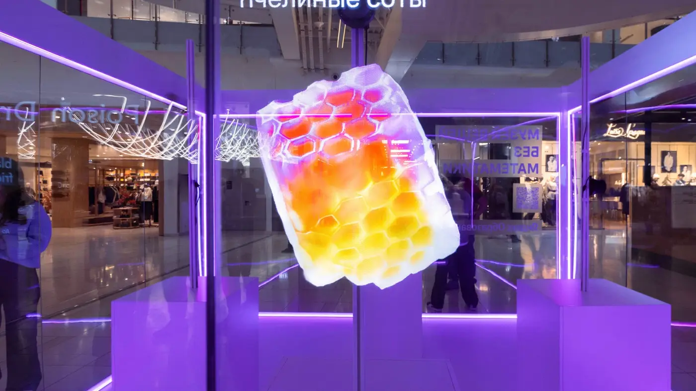
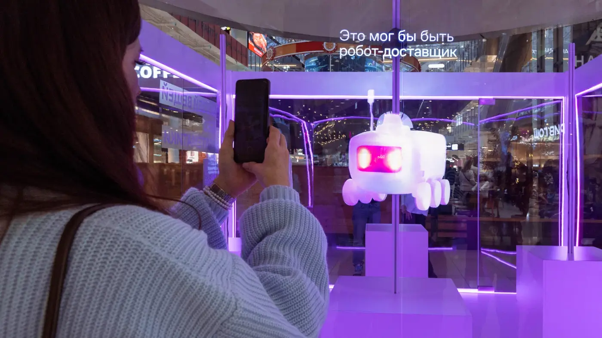
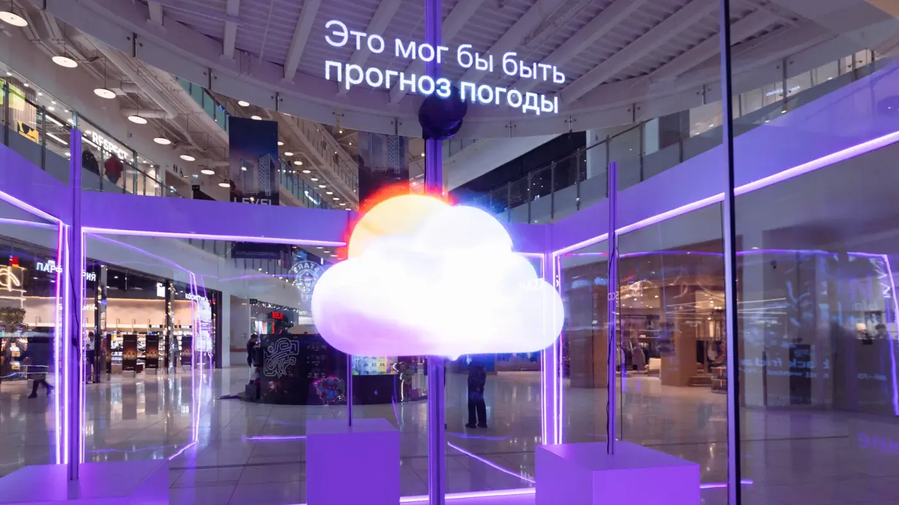

Показать значение математики через её отсутствие
Вместо объяснения формул проект создаёт мир, где привычные предметы теряют пропорции, симметрию, логику и точность. Зритель физически ощущает, насколько математика встроена в повседневность.
Yandex Education · Special project · Installation
Спецпроект о том, насколько незаметно математика встроена в повседневный мир — через физическую экспозицию, визуальные метафоры и сгенерированные объекты.
О проекте
Вместо лекции о формулах проект превращает математику в визуальный опыт. Знакомые предметы лишаются логики, пропорций, симметрии и точности — и тем самым показывают, насколько важны математические принципы.
Я отвечала за идею, арт-дирекшн, визуальный язык экспозиции, генерацию объектов и сопровождение продакшна.
CASE BREAKDOWN / INSTALLATION
Вместо объяснения формул проект создаёт мир, где привычные предметы теряют пропорции, симметрию, логику и точность. Зритель физически ощущает, насколько математика встроена в повседневность.
Коммуникация работает сразу в нескольких слоях: как физический музейный опыт, как серия визуальных метафор и как видео, которое расширяет проект за пределы площадки.
Я отвечала за концепцию, арт-дирекшн, сопровождение производства и генерацию объектов для музея — от визуального принципа до финальной экспозиционной системы.









Project video
Project video